비서-3급 (2017-11-12 기출문제)
1과목: 비서실무
1. 다음은 비서의 직업윤리와 관련된 업무내용들이다. 바람직한 비서의 업무태도로 짝지어진 것은?
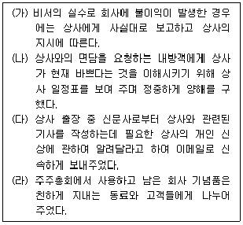
- (가), (나), (다), (라)
- (가), (나), (다)
- (가), (나)
- (가)
(정답률: 89%)

2. 비서의 업무 자세로 바람직하지 않은 것으로 짝지어진 것은?
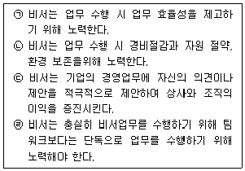
- ㉠, ㉡
- ㉡, ㉢
- ㉢, ㉣
- ㉠, ㉣
(정답률: 69%)
3. 다음의 상황에서 상사의 지시로 전화를 연결할 때 바람직한 행동과 가장 거리가 먼 것은?
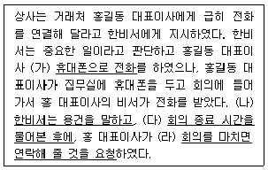
- (가)
- (나)
- (다)
- (라)
(정답률: 85%)
4. 다음 중 전화응대의 기본 원칙을 가장 바르게 설명한 것은?
- 바람직한 전화응대 목소리는 높지 않은 톤의 공손하고 활기찬 목소리이다.
- 용건전달을 위하여 배경-사유-결론의 순서로 내용전개를 하여 상대방의 이해를 돕도록 한다.
- 용건을 전달 받을 때 평이한 내용의 경우 복창을 하지 않고 그냥 듣기만 한다.
- 사내와 사외에서 걸려오는 모든 전화 응대시 회사명을 반드시 밝힌다.
(정답률: 73%)
5. 다음 소개 예절 중 바른 것은 무엇인가?
- 직위가 낮은 사람을 직위가 높은 사람에게 먼저 소개한다.
- 젊은 사람에게 연장자를 먼저 소개한다.
- 여성을 남성에게 먼저 소개하는 것이 서구식 에티켓이다.
- 한사람을 여러 사람에게 소개할 때는 여러 사람을 먼저 소개한다.
(정답률: 76%)
6. 다음 중 비서의 일정관리 업무 수행 방법으로 적절하지 않은 것은?
- 비서는 금요일 오후까지 다음 주의 주간 일정표를 작성해서 상사에게 보고하고 확인받는다.
- 일일 일정표는 가장 상세한 부분까지 작성하는 것이기 때문에 약속 시각뿐만 아니라 안건, 소요 시간, 이동 시간, 장소, 연락처, 만나게 될 사람, 필요한 자료나 정보에 관해서도 자세히 기록한다.
- 최근에는 컴퓨터와 스마트 폰의 일정 관리 프로그램과 연동시켜 비서는 상사의 일정을 실시간으로 관리한다.
- 다양한 일정 관리 스마트폰 앱(어플)들을 동시에 사용함으로써 일정관리 효율화를 제고할 수 있다.
(정답률: 63%)
7. 업무와 일정의 우선순위를 정할 때 고려할 요소로 거리가 먼 것은?
- 중요도
- 긴급도
- 몰입도
- 상사의 기호
(정답률: 75%)
8. 비서의 예약 업무에 대한 설명이다. 다음 중 적절하지 않은 설명은?
- 음식점 예약을 할 때는 일시와 장소, 예약 받는 사람의 이름, 전화번호, 예약 번호 등을 받는다.
- 음식점이나 여행사 등 예약 담당자와 좋은 관계를 유지하는 것이 예약 업무 수행에 도움이 될 수 있다.
- 예약 시 변경 사항이 있거나 예약 확약이 지체되는 경우는 최종 예약 내용만을 상사에게 보고하는 것이 효율적이다.
- 예약을 완료한 후에는 예약 이력 정보 목록을 작성하고 이를 참고하면서 보고를 하는 것이 좋다.
(정답률: 79%)
9. 일주일간의 해외 출장에서 돌아온 상사를 보좌하는 비서의 업무자세로 가장 적절하지 않은 것은?
- 상사 부재중의 전화 및 방문객 명단을 표로 작성하여 상사가 쉽게 확인할 수 있도록 한다.
- 비서는 상사 출장 중에 발생한 업무 자료들을 정리하여 상사 귀사 후 바로 업무를 시작할 수 있도록 준비를 한다.
- 출장지에서 도움을 준 사람들에게 감사카드를 발송한다.
- 상사 출장 중에 상사와의 면담을 요청했던 사람들에게 연락하여 가능한 빨리 상사를 만날 수 있도록 일정을 수립한다.
(정답률: 67%)
10. 상사로부터 회의 소집 지시를 받았을 때, 확인해야 할 사항 중 가장 우선순위가 낮은 것은?
- 회의 목적과 의제 파악
- 회의 장소
- 개최 일시
- 참석자 범위
(정답률: 54%)
11. 다음 한자 중 취임이나 승진에 사용할 수 없는 표현은 무엇인가?
- 祝榮轉
- 祝就任
- 祝繁榮
- 祝進級
(정답률: 52%)
12. 상사가 비서를 호출하여 업무 지시를 하신다. 이 때 비서의 업무자세로 가장 적절하지 않은 것은?
- 집무실 문이 닫혀 있는 경우 노크를 두 번한 후 들어간다.
- 상사의 지시 내용을 비서가 이해한 말로 복창한 후 틀린 사항이 있는지 확인한다.
- 상사의 지시 내용을 모두 메모한다.
- 문이 닫힐 때까지 집무실 문고리를 잡고 조용히 문을 닫는다.
(정답률: 64%)
13. 다음 중 비서의 업무 자세로 가장 적절하지 않은 것은?
- 상사의 지시 내용 중 날짜, 금액, 사람이름 등 중요한 내용은 복창한다.
- 시일이 걸리는 일은 중간 중간 보고를 한다.
- 상사의 지시를 받는 중 이해가 안 되는 부분이 있으면 바로 질문하여 지시 내용을 이해하도록 한다.
- 상사의 지시 사항을 적을 때 자신이 알아볼 수 있는 약어를 사용할 수 있다.
(정답률: 75%)
14. 다음 중, 상사의 신상 카드에 들어갈 내용을 바르게 고른 것은 무엇인가?
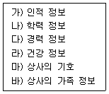
- 가), 나), 다)
- 가), 나), 다), 라)
- 가), 나), 다), 라), 마)
- 가), 나), 다), 라), 마), 바)
(정답률: 62%)
15. 다음 중 비서의 인간관계에 대한 설명으로 적절하지 않은 것은?
- 비서는 효과적인 업무 처리뿐만 아니라 자기개발을 위해서도 다양한 사람들과 좋은 관계를 형성하고 유지해야 한다.
- 비서 직무상 중요한 사람들을 자주 접할 수 있으므로 소극적이고 내부적인 인간관계를 유지해야 한다.
- 업무 수행 시에 의문점이 있을 때 조언을 청할 수 있는 스승이나 선배 혹은 전문가들을 많이 알아 두는 것이 업무수행에 중요하다.
- 직장 내에서 선임자, 선배 비서 때로는 상사가 비서의 멘토가 될 수 있다.
(정답률: 92%)
16. 비서의 이해관계자와의 관계를 설명한 내용으로 가장 적절하지 않은 것은?
- 비서는 기업과 이해관계를 맺고 있는 유관기관과 유관기관 인사에 대한 정보를 수집, 보관할 필요가 있다.
- 기업의 중요한 이해관계자인 소비자의 불만사항이 비서실로 들어오는 경우 비서는 소비자의 입장에서 도와줄 수 있는 방안을 찾아보고 친절하게 응대해야 한다.
- 언론기관이나 경쟁 기업의 사람들을 응대할 때에도 비서는 협조적인 태도로 임해야 하며, 공식적으로 발표되지 않은 내용이라도 친절하게 안내해야 한다.
- 비서는 경영자와 종업원 간에 원활한 의사소통이 되도록 노력해야 한다.
(정답률: 80%)
17. 다음 중 직장 예절에 맞게 행동한 비서는 누구인가?
- 강비서 : 복도에서 윗분들과 자주 마주치자 상체를 45도 정도 숙여 정중하게 인사한다.
- 나비서 : 불가피하게 상사보다 먼저 퇴근을 할 때는 “먼저 실례하겠습니다.” 혹은 “먼저 퇴근해서 죄송합니다.”라고 상사에게 인사를 하고 퇴근한다.
- 라비서 : 휴직이나 휴가 중일 경우 자주 사무실에 연락하여 회사 근황을 파악하여 업무의 공백을 없애도록 노력한다.
- 마비서 : 퇴근시간 10분 전에는 퇴근 준비를 시작하여 비서실의 모든 정리 정돈을 마치고 난 후 퇴근 시에는 다른 임직원과 동료에게 인사를 한다.
(정답률: 70%)
18. 다음은 비서들이 인간관계 관리에 대해 나눈 대화이다. 이 중 가장 바람직한 경우는?
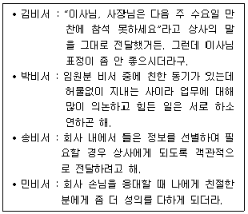
- 김비서
- 박비서
- 송비서
- 민비서
(정답률: 80%)
19. 다음은 비서가 상사에게 일정을 보고하는 내용이다. 다음 중 6하원칙의 구분에 맞지 않는 것은?
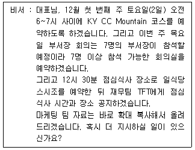
- who : 7명의 부서장
- what : 재무팀 TFT
- when : 12월 2일 오전 6~7시
- how : 확대 복사
(정답률: 82%)
20. 법인카드 사용 시 유의할 점으로 옳지 않은 것은?
- 카드를 사용한 후에 받은 매출 전표는 확실히 보관해 두어야한다.
- 카드는 항상 현금처럼 보관하고 카드를 잃어버렸을 때는 반드시 찾아야 한다.
- 대금 지불이 상사의 예금계좌에서 출금 되는 경우 잔고를 결제일 전에 확인해야 한다.
- 카드 결제 시 매출 전표의 금액과 날짜를 확인하고 서명해야 한다.
(정답률: 82%)
2과목: 사무영어
21. 다음 ____________에 들어갈 단어로 가장 적절한 것은?
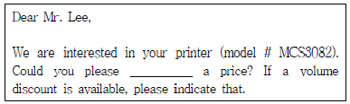
- quote
- tell
- take
- get
(정답률: 56%)
22. 다음 약어에 대한 설명으로 바르지 않은 것은?
- IT - Information Technology
- BTW - Buy the way
- CFO - Chief Financial Officer
- HQ - Headquarters
(정답률: 74%)
23. 다음 빈칸에 공통으로 들어가기에 알맞은 부서명을 고르시오.
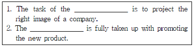
- IT department
- Finance department
- Human Resources department
- Public Relations department
(정답률: 66%)
24. 다음 빈칸에 들어갈 적절한 단어를 고르시오.
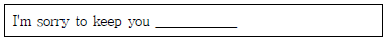
- waited
- wait
- waiting
- to wait
(정답률: 80%)
25. 다음 ( )안에 들어갈 단어로 적합하지 않은 것은?
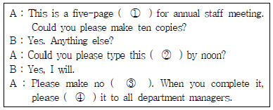
- printer
- minutes
- typos
(정답률: 53%)
26. 아래 서신의 제목으로 가장 적절한 것은?
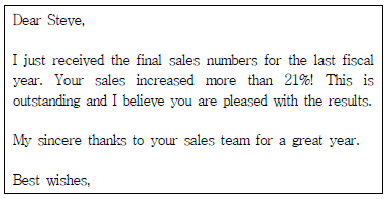
- Invitation
- Congratulations
- Condolence
- Inquiry
(정답률: 74%)
27. 다음 보기의 Business Letter 구성요소의 작성법 중 가장 올바르지 않은 것은?
- Best Regarding
- Dear Dr. Grondahl,
- Enclosure
- October 8, 2017
(정답률: 65%)
28. 다음 중 Business Letter의 구성요소에 관한 설명으로 올바른 것은?
- Subject는 과목을 말한다.
- Inside Address는 봉투에 적힌 발신인의 주소이다.
- Salutation의 예로는 Hi!가 가장 일반적인 표현이다.
- Letterhead는 발신인의 정보이다.
(정답률: 65%)
29. 빈 칸 Ⓐ에 들어갈 어휘로 적합하지 않은 것은?
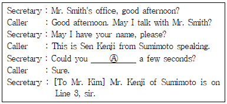
- wait
- hold on
- hang on
- hang out
(정답률: 65%)
30. When is Ms. Parker's return trip reserved after thedialogue below?
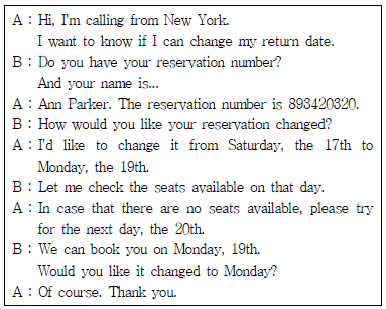
- Monday, 19th
- Saturday, 17th
- Tuesday, 20th
- Sunday, 18th
(정답률: 78%)
31. 다음 memo에 대한 설명으로 가장 적절하지 않은 것을 고르시오.
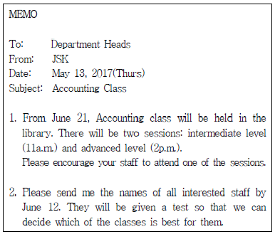
- 이 문서의 수신인은 같은 회사 내의 부서장들이다.
- 교육이 6월 21일부터 열린다는 내용이다.
- 교육은 직원들 모두가 의무적으로 받아야 함을 명시하고 있다.
- 교육의 내용은 중급과 고급으로 나뉘어져있다.
(정답률: 82%)
32. 아래 __________에 들어갈 표현으로 적합한 것은?
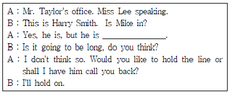
- on another line
- on a business trip
- out of the office
- just hung up
(정답률: 62%)
33. 다음 대화에 나오는 마케팅 부서의 위치에 대한 설명으로 바른 것은?
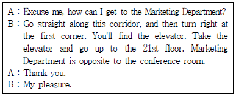
- 마케팅 부서를 가려면 복도 맞은편에 있는 엘리베이터를 타고 21층으로 가야 한다.
- 엘리베이터는 복도를 따라 가다 첫 번째 모퉁이에서 우측으로 돌면 있다.
- 마케팅 부서는 회의실 옆에 있다.
- 마케팅 부서를 가려면 회의실을 지나쳐서 가야한다.
(정답률: 70%)
34. 다음 전화대화에서 빈칸에 들어가기에 적합하지 않은 것은?
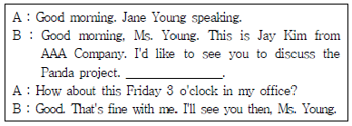
- When can you let me know by?
- When would suit you?
- When would be convenient for you?
- What time would be good for you?
(정답률: 56%)
35. 다음 빈칸의 ⓐ, ⓑ에 공통으로 들어갈 가장 적절한 표현은?
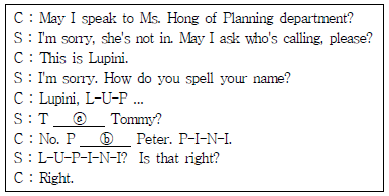
- as in
- as of
- is to
- of the
(정답률: 60%)
36. 다음 보기 중 빈칸에 들어갈 내용으로 가장 적절하지 않은 것은?
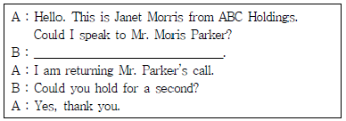
- May I ask what you’re calling for?
- May I ask who’s calling, please?
- What is it about, please?
- May I ask the reason of your call?
(정답률: 68%)
37. 다음 대화의 밑줄 친 빈 칸에 들어갈 단어 중 적절하지 않은 것은?
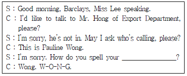
- surname
- family name
- last name
- given name
(정답률: 48%)
38. 다음 대화를 읽고 빈칸에 들어갈 단어들이 바르게 짝지어진 것을 고르시오.
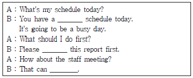
- free - leave - run
- full - handle - wait
- flexible - manage - be done
- slow - complete - be available
(정답률: 75%)
39. 아래 대화에서 회의는 언제 시작하기로 예정되어 있었는가?
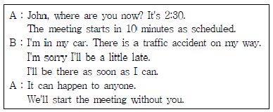
- 2시 20분
- 2시 30분
- 2시 35분
- 2시 40분
(정답률: 81%)
40. 아래의 대화 내용과 일치하는 것은?
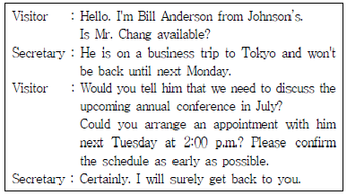
- Mr. Anderson은 다음 월요일에 회의를 하고자 한다.
- Mr. Anderson은 월간 회의 건으로 전화를 한 것이다.
- 상사는 다음 주 화요일에 사무실로 복귀할 예정이다.
- 비서는 보스가 최대한 빨리 귀국하도록 할 것이다.
(정답률: 51%)
3과목: 사무정보관리
41. 다음과 같이 비서가 문서 작성 후 발송하기 위한 작업을 하고 있다. 다음 중 업무처리가 가장 적절하지 않은 비서는?
- 여러 사람에게 문서를 발송하는 경우에 메일머지를 이용하여 주소 레이블 작업을 하였다.
- 수신자가 법인대표여서 명칭 뒤에 귀중이라고 표기하였다.
- 등기로 우편을 보내는 경우에는 등기번호를 잘 기록해두었다.
- 문서를 발송하기 전에 발송될 문서와 동일한 형태의 문서사본을 보관하였다.
(정답률: 71%)
42. 공문서로 기안문을 작성하고 있다. 다음 중 가장 올바르지 않은 것은?
- 발신기관의 로고나 상징, 마크를 표시하였다.
- 발신기관의 홍보문구는 발신기관명 바로 아래에 표시한다.
- 수신자가 없는 내부 결재 문서인 경우 수신자란에 ‘내부결재’라고 표시한다.
- 경유는 수신기관에 앞서 중간에 거쳐 가는 기관을 기재하는 것이다.
(정답률: 74%)
43. 비서가 업무상 이메일로 문서를 작성하고 있다. 다음 중 가장 적절하지 않은 것은?
- 격식이나 보안이 필요하지 않은 일반적인 내용일 때 이메일로 작성해서 발송하였다.
- 시급한 내용을 담은 이메일이여서 이메일을 발송한 후 문자로 메일 확인을 요청하였다.
- 이메일 제목은 구체적이면서도 너무 길지 않게 결정하여 작성하였다.
- 이메일은 간단명료하게 작성하는 것이 중요하므로 인사말은 생략하고 본론을 언급하였다.
(정답률: 85%)
44. 장비서는 근로계약을 갱신하면서 계약서의 앞장 뒷면과 뒷장의 앞면에 걸쳐 도장을 찍었다. 이러한 행위를 의미하는 용어는 무엇인가?
- 간인
- 인장
- 직인
- 병인
(정답률: 61%)
45. 다음 중 외래어를 올바르게 수정하지 않은 것은?
- 레포트 → 리포트
- 잉글리쉬 → 잉글리시
- 커피숍 → 커피숖
- 메세지 → 메시지
(정답률: 91%)
46. 발송문서에 대한 설명으로 가장 잘못된 것은?
- 문서를 외부로 발송할 때는 기안문으로 발송한다.
- 발신명의 표시의 마지막 글자가 직인의 가운데에 오도록직인을 찍는다.
- 문서를 발송할 때에는 사본은 보관해두고 발송한다.
- 직인을 생략하는 경우 발신명의 오른쪽에 직인생략을 표시한다.
(정답률: 75%)
47. 문서의 구성요소에 대한 설명으로 잘못된 것은?
- 서문에 발신인 정보를 생략하고 레터헤드로 대체할 수 있다.
- 본문은 간단한 인사말과 전달할 내용으로 구성한다.
- 결문은 문서의 수신인, 발신인, 날짜, 제목으로 구성한다.
- 보고서와 같이 분량이 많은 문서의 경우 서론, 본론, 결론으로 구성할 수 있다.
(정답률: 66%)
48. 다음의 설명에 해당하는 단어는?
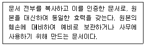
- 표본
- 사본
- 부본
- 등본
(정답률: 56%)
49. 다음 중 공문서에 대한 설명으로 가장 옳지 않은 것은?
- 공문서는 행정기관의 공무원이 작성 또는 접수한 문서를 의미한다.
- 공문서는 일반적인 문서뿐 아니라 도면, 사진, 필름 등도 포함된다.
- 개인이 작성한 사문서도 행정기관에 제출해 접수하면 공문서가 된다.
- 공문서는 문서 제출자에 한해 임의로 회수할 수 있다.
(정답률: 60%)
50. 다음 중 홈페이지에 대한 설명이 가장 잘못된 것은?
- 웹브라우저를 실행시켰을 때 보여지는 첫 화면이다.
- 고유 주소인 도메인 네임을 가지고 있다.
- 웹 로그(Web log)의 줄임말이다.
- 기업의 홈페이지는 고객들을 직접 만나지 않고도 가상의 공간에서 고객과 소통할 수 있다.
(정답률: 79%)
51. 다음 중 비서의 정보 검색 방법이 가장 잘못된 것은?
- 상사가 원하는 정보를 찾기에 적합한 검색엔진을 선정하여 사용법을 익혀 둔다.
- 검색하고자 하는 주제어는 다양한 검색어로 검색하며, 검색의 정확성을 위해 AND와 OR같은 연산기호는 되도록 사용하지 않는다.
- 자주 활용하는 정보 사이트는 ‘즐겨찾기’로 저장해 둔다.
- 필요한 정보의 수집 방법과 수집 도구를 계획한다.
(정답률: 85%)
52. 비서로서 소셜미디어 활용 및 관리 업무를 처리하고 있다. 다음 중 가장 올바르지 않은 것은?
- 우리 회사의 SNS를 수시로 모니터링 하여 소비자의 반응을 살핀다.
- 경쟁회사의 SNS에 관심을 가지고 모니터링 한다.
- 상사 개인 SNS는 운영 및 관리에 관여하지 않는다.
- 사내 직원들이 회사 SNS를 활용하고 홍보할 수 있도록 권장한다.
(정답률: 77%)
53. 두 대 이상의 정보통신 기기가 가까이 있을 때 케이블로 연결하지 않아도 무선으로 기기들 간에 정보를 보내고 받을 수 있는 기능은?
- 비트코인(bitcoin)
- 블루투스(bluetooth)
- 빅데이터(big data)
- 딥러닝(deep learning)
(정답률: 87%)
54. 다음 중 컴퓨터 악성코드 및 불법인터넷 무단광고를 예방할 수 있는 방법에 대한 설명으로 가장 적절한 것은?
- 가장 최근에 사용한 인터넷 검색 기록을 삭제한다.
- 모든 프로그램 파일과 폴더는 암호화하여 관리한다.
- 발신자가 불분명한 이메일에 첨부된 파일은 실행하는 것을 자제한다.
- 최근에 개발된 백신 소프트웨어를 설치하면 최신버전 업데이트는 하지 않아도 무방하다.
(정답률: 68%)
55. 다음 중 비서의 정보 보안 업무가 잘못된 것은?
- 중요한 서류나 기밀문서는 자물쇠를 활용하여 캐비닛에 보관하도록 한다.
- 컴퓨터 바이러스에 대비하여 사내 백신 프로그램을 정기적으로 업데이트할 필요가 있다.
- 분실 위험에 대비하기 위해 외장하드는 사용하지 않는다.
- 비서는 자신이 사용하는 컴퓨터에 비밀번호를 설정해야 한다.
(정답률: 90%)
56. 사무정보기기를 과거부터 현재까지 시대 순으로 나열한 것이 잘못 된 것은?
- 데스크탑PC → 노트북PC → 태블릿PC
- 레이저프린터 → 잉크젯프린터 → 도트프린터
- 프린터, 스캐너, 팩스, 복사기 → 복합기
- 수동식 타자기 → 전동식 타자기 → 워드프로세서
(정답률: 71%)
57. 스마트모바일 기기에서 사용되는 콘텐츠의 특성이 아닌 것은?
- 인터넷을 통해서 콘텐츠를 언제, 어디서나 쉽게 접근할 수 있다.
- 디지털보다는 아날로그를 기반으로 하고 있다.
- 콘텐츠에 대한 이용자의 자유로운 피드백을 허용하여 높은 상호작용성을 가진다.
- 디지털화된 콘텐츠를 가지기 때문에 빠른 시간 내 많은 양의 콘텐츠가 생성될 수 있다.
(정답률: 87%)
58. 인터넷망을 통해서 다양한 콘텐츠를 제공하는 서비스로서 오디오 파일이나 비디오파일 형태로 뉴스나 드라마 등 다양한 콘텐츠를 제공하는 서비스이다. 방송시간에 맞춰 들을 필요가 없이 구독 등록을 해놓으면 자동으로 업데이트되는 관심프로그램을 내려받아 시간에 구애 없이 보거나 들을 수 있다. 위 설명에 해당하는 서비스는?
- 오디오북
- 유튜브
- 라디오
- 팟캐스트
(정답률: 59%)
59. 다음 비서의 정보 검색 순서가 올바르게 연결된 것은?
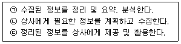
- ㉡ → ㉠ → ㉢
- ㉠ → ㉡ → ㉢
- ㉠ → ㉢ → ㉡
- ㉡ → ㉢ → ㉠
(정답률: 83%)
60. 블랙박스, 디카, 스마트폰 등 작은 휴대용 기기에 주로 사용되는 저장장치로, 디지털카메라에서 찍은 사진을 휴대폰에 옮겨서 본다거나, 차량용 블랙박스에 찍힌 영상을 PC로 옮겨보는 등 다양한 디지털 기기에서 데이터 호환의 장점을 가진 저장장치는?
- RAM카드
- CD-R
- 블루투스
- SD카드
(정답률: 84%)